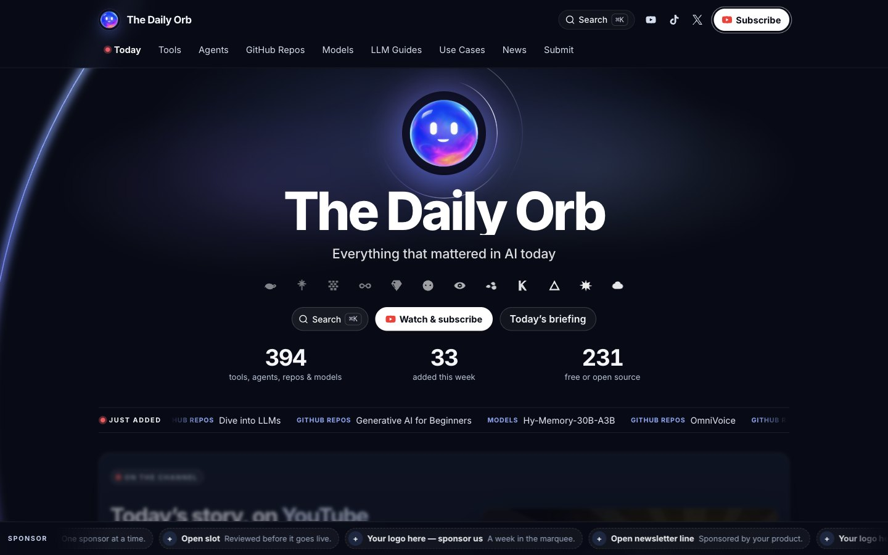

Episode / THE DAILY ORB
My AI channel and companion directory.
Short explainers, useful tools, and the stories behind them.

HOW I BUILT THE PROJECT ↗Selected episodes · curated Oct 26, 2026.
The channel has the current uploads.
One of the channel’s published AI news explainers. Load the YouTube player here, or watch on the channel.
Watch on YouTube ↗The player connects to YouTube when loaded.

Episodes live on YouTube. The Daily Orb website connects the stories to tools, models, guides, and source links.